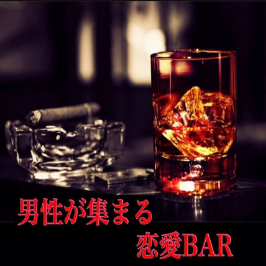

男性が集まる恋愛BAR
by M&MAYA
国際色豊かで、ちょっとエッチな恋愛マスターＭと、性別関係なく多岐に渡る相談を受けてきたMAYAが、全ての男性にもっと素敵な恋愛をして頂きたく恋愛における本音トークを展開！！
GiGs media
by M&MAYA
国際色豊かで、ちょっとエッチな恋愛マスターＭと、性別関係なく多岐に渡る相談を受けてきたMAYAが、全ての男性にもっと素敵な恋愛をして頂きたく恋愛における本音トークを展開！！
Hi everyone! 英語の挨拶で始まった今夜のPodcastは
・先週＆先々週登場したケチな男達に聞かせたい！Mの身近に居た紳士的な男子。
・おなじみ男性リスナー、たこまるさんより。女性を誘う時に気を付けているコト。
・NGなホテルの誘い方とスマートなホテルの誘い方
・大人女子。どんな条件だったら相手とエッチしたくなる？
初デートの会計シーン。エッチのお誘い...
20代前半でOKだったコトが、30代、40代になるとNG行為として認定される事が増えてくると思います。大人にとっての紳士的な男性とは？エッチしたくなる男性とは？実体験も交えつつ、思いつくままに熱くトークしました。
気になる相手とスムーズに関係を深めたいと思っている男性の皆さま！ぜひ参考にして下さいネ。
We hope you’ll have a wonderful weekend!
今夜も先週に引き続き、Mayaさんの身に起きた体験トークをお届します。
男性の皆さま、初対面のデートで絶対NG&女性が引く行動・言動はコレです・・・！
・季節のせい？最近やたらとヘンな人が周りに！
・暴走厳禁！性癖が合えば良いってモンじゃない！大事なのは・・・
・The会計シーン。先週とは違うタイプのNGパターン
・大人の関係。女性が思う上手なエスコートとは？
などなど、今回もたっぷりの内容となっております。
今は春、もうすぐ夏。性欲も恋愛したい気持ちも高まる時期ですが、男女の関係には相手を敬う気持ちが欠かせないですよね。初対面で女性に好感を持たれれば、その後の展開もスムーズに運ぶこと間違いなし！ぜひMayaさんの体験とアドバイスを参考にして、モテ紳士になって下さい！
今夜は、つい最近Mayaさんの身に起きたガッカリな男性との実録体験をお届けします！
「こんな男はイヤ！」「二度目のデートはあり得ない！」と女性が思う男性の行動とは？？？
多くの皆さまに聞いて頂きたい内容満載です！
・ヒール履いてる女性には気遣いを！
・初対面。ボディタッチと質問攻めには注意！
・落としたいと思う女性を、そこ連れてく？！
・初めての食事。会計時でのガッカリな瞬間＆NGワード
・初対面の後の連絡。LINE未読＝見込みナシと心得よ！
などなど、他にも伝えたいことがいっぱいの今夜！
特に今回は、Mayaさんが実際に体験したお話をお伝えするのでとてもリアルな内容です。
NG行為にお心当たりのある男性の皆さま、初デートで失敗経験のある男性の皆さま、ぜひ参考にして下さいネ！
今夜も、リスナー様に頂いた複数のメールをご紹介しながら色々なコトについてお話します。
・質問メール「オ○二ーを彼氏に見せたことありますか？」
・感想メール：～番組を聞いて～「生理中の女性ってこんなに辛いんだ！」
・感想メール：Maya&M大感激！若い女性からの応援メール！
エロから真面目なお話まで、バリエーション豊かにお届けする今回。ぜひぜひ！聞いて下さいネ。
最近番組で度々盛り上がっている○液の話題。あなたは相手の体液をどこまで受け止められますか？
今夜は、番組に頂いた男性リスナー・Jさんのお話を交えながら、○液と許容範囲についてじっくりトークします！
・潔癖症な部分と許容範囲について
・好きな相手VSワンナイトの関係。○液どこまでOK？
・好きな人でも受け付けないことがある・・・？！
などなど！
性に関する許容範囲って、ある意味話し始めたらキリがないテーマかもしれません。性癖を持つのはおかしなコトじゃないし、むしろ皆少しはもってるハズ！色々な人の性癖を知ったり話したりする事は「自分はコレが好き」「ここまでOK/ここはNG」など、自分の性を理解出来るスタートになると思います。あなたの性癖や許容範囲も、良かったら聞かせて下さいネ！！
2回に渡って真剣トークが続いた「男性が集まる恋愛bar」ですが、今日は気分新たに？！お馴染みのエロをテーマとしてお届けします！
以前、「奥様の後ろの門を開発したいのだけれどどうすれば・・・？」とご質問を下さった既婚男性のくじらさん。そのご質問についてMayaさんが「後ろの門を開く方法」を私達のfc2ブログに書いていたのですが、ブログを読んだ後の奥様との性生活について、近況報告をして下さいました！報告に加えて、フェチを持つ男性へのアドバイスも頂いたのでご紹介します！
・祝！妻が後ろのプレイに興味を持ち始めた！
・既婚男性によるアドバイス！パートナーを自分好みに変える方法
・女性はありのままを褒められたい＆共感してもらいたい生き物
奥様や彼女になかなか言えない性癖をお持ちの方、フェチを満たしたい方、ぜひぜひ聞いてみて下さいネ！
先日見つけたとある男性Youtuberさん。自らを恋愛依存症だと言い、何故自分の恋愛がうまくいかないかをクレームのように語って配信していらっしゃいます。なぜうまくいかないのでしょう？
今夜は、ネガティブ思考と前向きな生き方について少し真面目にトークします！
・「借金があるから恋愛対象にならない」のはホント？！
・「自分はどうせモテない」と卑屈になってもうまくいくはずがない！
・文句ばかり・グチばかりの相手とは楽しいお付き合い想像できない！
・全てはエネルギー。「陰」は「陰」を引き寄せる！
世の中には「恋愛したい」「幸せになりたい」と言いながら周りのせいにしたり、グチばかり言ってる人がいます。そろそろ、考えを自己責任・自分軸に置き換えて本当の幸せを掴みませんか？
意識を変えるだけで、驚くほど人生のステージが上がるはず！
ぜひお聞き下さい。
今夜は「第45回 お金目当て？！恋愛感情を利用する女性にご用心」の放送を聞いて、ご自身の経験を元にアドバイスを下さったおなじみ・たこまるさんのメールをご紹介すると共に、3度目の婚約破棄を迎えた貢ぎグセのある知人についてトークします。
過去に苦い経験をされた男性の皆さま、恋愛・人生経験豊富な男性リスナー様による「お金目当ての女性の特徴」はメモ必須ですよ！！
・好きな女性には、物をあげるより思い出をあげろ！
・その彼女、ご馳走した時にお礼が言える子？
・彼女の持ってるブランド品。どうやって買ったんだろ？？
などなど！
番組で度々話題にしているお金と恋愛のおハナシ。過去の恋愛において「あんなにお金かけたのにどうして？！」「喜んでくれると思ってお金使ったのに、何でフラれるの？？」なんて経験がある方も少なくないはず。
どんな人にとっても、一方通行じゃなく、お互いを思いやる恋愛関係を築くのが一番ですよね！精神的にも経済的にもムリをしない関係がベストだとMaya&Mは思います。
皆さん、「ガシ○○」というワードご存知でしょうか？性行為中に女性の性器を(主に指で)乱暴に扱うやり方で、今ツイッターなどで問題として取り上げられています。出血をして苦しんだり、仕事が出来なくなるほど体に傷が出来てしまったり、深刻な状態で悩んでる女性が大勢います。
番組でも先日、常連の男性リスナー様より「ガシ○○問題」について取り上げてほしいとメールを頂き、偶然にも同じ頃、同じ問題について「番組を通してガシ○○プレイが与える女性の体への影響を男性に訴えてほしい」と風俗にお勤めの女性からメールを頂きました。
今夜は風俗業界で働く女性リスナー様の切実な訴えとご意見を皆様にシェアし、「女性の体を大切にする性行為」「相手へ尊重の気持ちを持って行う性行為」などについて考えていきます。
・風俗で働く女性のリアルなご意見
・ガシ○○する＝AV観すぎ
・彼氏に遠慮して、痛くても痛いと言えない女の子も居る
・ガシ○○より、こんな指使いが絶対気持ちいい！
今夜はいつもと少し違う雰囲気でお届けしますが、ぜひ多くの方に聞いて頂きたいです。
彼氏と彼女・妻と夫・風俗嬢とお客、どんな関係性であっても、常に相手を尊重して性行為を行うことがMayaとMは大切だと思います。
第43回「男性の○液についてひたすら語る回」で取り上げたナマ○出しのお話。多くの方から大きな反響を頂いたと共に、男性リスナー様より何通かのご意見・体験シェアを頂きました。
今夜は、シェアokを頂いたメールをご紹介しながら「より安全でよりhappy」なナマ○出しプレイについて改めてトークしていきます！○出しプレイに関する男性の本音とは・・・？
・男性はやっぱりナマが好き？！
・男性リスナー様達のリアル体験＆過去の女性達
・自分の○子を味わった感想
・男女共通。相手への思いやりを忘れず、自分を守るプレイを！
などなど。時には大きな問題にも発展してしまう○出し。信頼できる相手と、節度を持って行いたいプレイですよね！
私たちの番組を聴いて下さる男性リスナー様たちは紳士的な方が多いので、MもMayaも嬉しい限り。
皆さんも「自分を大切に・相手を大切に」を基本に楽しいエッチをして下さいネ！
今夜の内容・・・SMプレイに興味のある男性・Sっ気がある男性は必聴です！
番組へ初のご質問メールを下さった40代男性のカズさん。
S気質のカズさんは、Mな女性を探し求めていらっしゃるとのこと。今回、「どうすれば女性に気付かれずに相手がMと見分けられますか？」というご質問を頂きました。
M度全開のMayaとMが、具体的にお答えします！
・S? M? 見た目の雰囲気はあまり当てにならない
・パーソナルスペースで近寄った時の女性の反応に注目！
・前戯中の反応が一番わかりやすいかも！
・「恥ずかしがってる=M」と「ただ嫌がってる」の見極めも大切
＋＠MayaとMの普段の生活について少しオハナシ
フェチやSM、自分の理想のHを素敵な相手と楽しめたら最高ですよね！お互いの性癖を恥ずかしがらずに伝えて、お互いを尊重しつつ楽しめたら言う事ないと思います。
これまで番組で何度かテーマにした「男性の○液」のハナシ。
そのトークの中で私たちは「ぜひ男性に自分の○液を舐めてみてほしい」と提案（？）していたのですが・・・・
なんと！実際にご自分の○液を舐めてみたというリスナー様からその体験を報告するメールが届きました。
メールを下さったのはツイッターでもよく絡んで下さるTさん。
かなり詳細に「○液舐めミッション」を実行された感想をシェァして下さっています！「ちょっとイケナイ事してる・・？！」的なドキドキが伝わってくる大変興味深い内容です。
今夜は、リスナー様から頂いたメールをご紹介しながらMとMayaのリアル体験をシェアします！
メールを下さったのは、番組へよくご質問や感想を送ってくださるグリーンさん。
ご質問内容は、
『MとMayaの初体験について♡』
今回も私達らしく、包み隠さずトークしました！
・初体験の感想
・感触は？？痛かった？
・初H!男性の○○を見た時どう思った？
などなど！
さてさて！今回のテーマは女性の「おムネのある部分＝○首」について。
きっかけは、先週ご紹介したグリーンさんのメールにあった初体験の相手のハナシ。
先週の配信を聴いて「好みのおムネ＆○首」についてご意見をシェアして下さったリスナー様達のお話を交えながら、MとMayaの事情などなど赤裸々に話しちゃいます！
・告白！MとMayaの○首はこんなカンジ
・形、見た目よりも感度が大切？！
・男性の○首について大人女子が思うコト
・○首で感じる男性＆感じない男性の差は？！
などなど、エロ要素多めでお届けします。
ぜひお楽しみください！
今夜は、Youtubeで私達の番組を聴いて下さった既婚男性からのメールをご紹介します！
メールを下さったのは、既婚男性/父親でいらっしゃるエナメリンさん。
結婚当初は奥様と夜の生活をエンジョイしていたけれど、今ではそういった楽しみがないとのコト。
また、レザーや光物に興奮される性癖をお持ちで女性がフェチについてどう思うか？というご質問も頂きました。
MとMayaが女性目線でお答えします！
・フェチについて私達が思うコト
・性に積極的な旦那様ってステキ！
・性癖を満たすH。全ては奥様の気持ち、状況次第？！
・長い結婚生活→ワンパターンHよりフェチがあったほうが◎
結婚生活が長いご夫婦、お子様がいるご夫婦の皆さんには、同じようなレス・フェチに関するお悩みを持つ方も多いのでは？
ぜひ参考にして下さい！
今夜は、Youtubeで私達の番組を聴いて下さった既婚男性からのメールをご紹介します！メールを下さったのは、既婚男性/父親でいらっしゃるエナメリンさん。結婚当初は奥様と夜の生活をエンジョイしていたけれど、今ではそういった楽しみがないとのコト。また、レザーや光物に興奮される性癖をお持ちで女性がフェチについてどう思うか？というご質問も頂きました。MとMayaが女性目線でお答えします！
・フェチについて私達が思うコト
・性に積極的な旦那様ってステキ！
・性癖を満たすH。全ては奥様の気持ち、状況次第？！
・長い結婚生活→ワンパターンHよりフェチがあったほうが◎
結婚生活が長いご夫婦、お子様がいるご夫婦の皆さんには、同じようなレス・フェチに関するお悩みを持つ方も多いのでは？ぜひ参考にして下さい！
以前に配信した「第41回 あなたの交際、本当に順調？」について、番組でお馴染みの人生経験豊富な男性リスナー・たこまるさんから感想を頂きました！第41回で取り上げたのは、女性に貢いで失恋する男性についてのお話。お金目当てで近づいてくる女性、努力しないで男性に頼ろうとする女性、あなたの身近にいませんか？！ そんな女性達への対応、男性側とての凛とした態度についてたこまるさんが貴重なご意見をシェアして下さいました。今夜は、MとMayaの経験や意見も交えながら真剣トークをお届けします！
・好意で渡したお金やプレゼント。知らず知らず、「貢物」になってない？！
・彼女とあなたの金銭感覚。違和感があるなら気を付けて！
・つい貢いじゃうあなた。「欲しいものは自分で働いて買う！」を相手に徹底してみよう！
・その彼女、本当にあなたを愛してる？
今夜のトークテーマは「男性の趣味」。サーフィンや車など、男性に多い趣味ってありますよね！付き合ってる相手と別れる要因の一つにもなりかねない趣味について、過去の経験や身近で聞いた話を交えて本音を語ります。
・デートより趣味！な男性
・生活費を削ってまで趣味に投資する男性
・趣味も恋愛も上手く両立させるには・・・？
・譲れない趣味を持つ人はココで出会いを探そう！
自分の好きなコトに没頭する時間はとっても大切！だけど、彼女や奥さんが出来た時に異常な時間を趣味に費やすと寂しくなる女性は多いかも？！ 何でも度が過ぎるとバランスが取れないってことなのかもしれません。心当たりがある方は、ぜひ参考にしてみて下さい！
先日、人気Youtubeチャンネルで見かけた『男性の○液と美容法』について気になった私たち。今夜は男性の○液やそれに関するプレイについて、MとMayaが考えるアレコレを正直に＆リアルにお届します！（今夜は特に具体的内容を含んでいますので、人によっては不快に感じられるかもしれません。エッチ系が苦手な方はお控え下さいませ）
・アリ？ナシ？男性の○液を塗る美容法？！
・やっぱり飲むのは苦手！
・どこに出す？MとMayaの妄想トーク。今回はガッツリなエロ回となりました。普段色々と考えていても、話題にすることが難しい○液問題。健全で安全なプレイを行うという前提のもと、女子のリアルな意見を参考にして頂ければ幸いです！
最近Youtubeで気になった、複数の独身男子による恋愛体験談シェアチャンネル。「恋愛がうまくいかない、何だかうまくいかない」と彼らがグチをこぼすワケとは・・・？ 勝手ながら、何故彼らの恋愛がうまくいかないのか考察してみました！
・暗い・グチが多い人はやっぱり相手を遠ざける！
・結局は内面から滲みでる魅力がhappyな恋愛や出会いを左右する
・自分の想いばかりに一生懸命になっていない？
・気がつけば不幸自慢してない？相手のせいにしてない？
「恋愛したいけどうまくいかない！」と思ってるそこのアナタ ( 男女問わず！)。外見も大事かもしれないけど、大人になったら外見より中身！自分の意識や考え方をちょっと変えるだけで、恋愛事情もガラリと変わるかもしれません！今夜は恋愛はもちろん、職場や友人など幅広い人間関係において大切なコトや「happyになれる自分の在り方」について真面目トークをお届けします！
新年明けましておめでとうございます！皆様、良いお年を迎えられましたでしょうか？今年も「男性が集まる恋愛BAR」をどうぞ宜しくお願い致します！今夜は新年のご挨拶と、リスナー様の質問メールをご紹介！今回メールを下さったのは、いつも番組を応援して下さる「グリーンさん」で、内容は「女性のAVの鑑賞」について。大人女子のAV事情を本音トークでお答えします！
・AV鑑賞。女性は男優を見てる？女優を見てる？
・何を想像しながらAVを見てる？
・MとMayaの好きな女優さん達などなど！
2018年の1月にスタートした「男性が集まる恋愛BAR」。早いもので、もうすぐ開始から1年です！お遊び感覚で始めた番組ですが、気が付けば大変多くの皆さまに応援して頂けるようになり、ファンの方々との直接のやりとりなども楽しませて頂き、日々支えられております。今夜は、2018年の締めくくりにM&Mayaから皆さまへお礼のメッセージをお届けします！今年は初めて挑戦する事がたくさんあった「男性が集まる恋愛BAR」でしたが、皆さま本当にお世話になりました。2019年も笑顔で楽しんで頂けるよう、番組を続けていきますのでどうぞ宜しくお願い致します。素晴らしいお年をお迎えくださいませ。
今夜は、番組でいつもお世話になっている「くじらさん」から頂いたメールをご紹介します！くじらさんは、前回頂いた「小さな子供がいる夫婦の性生活について」の質問アンサーに対するその後のお話をシェアして下さっているのですが、既婚の方に絶対に参考になるエピソードが含まれています。ぜひお聞き逃しなく！
・既婚男性&これから結婚する男性に聞いてほしい！奥様との充実した性生活エピソード
・「おしり」的プレイに関するご質問
・大人的「おしり」のハナシ
番組スタートのきっかけとなった知人男性のIさん。どうやら彼、近いうちに入籍するらしい！恋愛/結婚に暴走して突然フラれる経験を繰り返してきたIさんですが、今度こそは幸せを掴んでほしいと願ってやまないMとMayaです。そこで！交際が順調だと思ってたのに、突然相手にフラれるってどうゆうコトなのでしょう？今夜は、危うい交際についてトークします。
・気が付いたら彼女にムリして貢いでない？
・結婚の進め方。彼女と歩幅は合ってる？
・順調だと思ってたのに・・・突然音沙汰ナシになった事はない？(＆先日のポッドキャストに入ってたイビキの説明)
皆様いつも、番組へ温かい応援メッセージや質問メールをありがとうございます。今夜も、リスナーさんから頂いたメールをご紹介します！仮性包○でエッチの時にそれを隠そうとしてしまうという男性U.Kさん。「女子は包○についてどう思っていますか？」とのことで、MとMayaが素直な意見を答えさせて頂きました！
・男性が思うほど女性は気にしてない？！気が付かない場合も？！
・もし包○が原因で恋愛やHに消極的になるのであれば・・・同じ事で悩んでる方、それが原因でエッチの時に心理的負担を抱えてる方、リスナーさんの中にもいらっしゃるかもしれませんね。案外、女子は気にしていない事かも！だけど、どんな悩みであれ解決出来たら恋愛やエッチもっと楽しくなるはず！
男性が好きな女性のコスプレといえばナース・CA・女教師など色々思い浮かびますが、女子は男性のどんなコスプレに興奮するのか？今夜はそんな内容について自由気ままにトークします！
・誠実なイメージの制服ほど燃える？！
・私たちのH妄想。日常こんなコト考えてます
・今通っている歯科医院でのハナシ.ほとんど妄想トークで終わった今回w。ですが、日常生活でHな事を考えてる女子も普通に居る！という事がわかる内容です。彼女や奥様との楽しいHの参考にしたり、シングルの方も今後の恋愛・女性関係において女子を知る1つの材料として楽しく聞いて頂ければ嬉しいです！
今回も頂きました、リスナーさんからのお悩みメール！紹介するのは『どうすれば彼女がすぐ出来る魅力的な男性になれますか？』という内容。色んなタイプの男性とお付き合いしてきたMとMayaが、自身の経験を元に正直な意見で答えます！
・女子ウケの良い男性とは？
・聞き上手&共感上手な男性は間違いなし！
・清潔感は絶対的な重視ポイント
・付き合った後。初エッチのタイミングは気を付けて！
前々回の配信で話した、男性の体の好きなパーツ。その流れで、今回は好きな男性の匂いについてトークします！( 収録事情により、前回・前々回と今回の内容が前後しております。申し訳ありません。）
・男性の香水ってどう思う？
・香水つける？つけない？その前に清潔感が大事！
・汗の匂いについて
・匂いだけでついて行きたくなった男性のハナシなどなど
男の人の匂いや香り。好みは完全に人それぞれですが、匂いが恋愛のキッカケになるかも？！匂いや香りというフィルターを通して女子が男性の何を見ているかを知りたい方は、ぜひぜひ聞いてみて下さいネ！
ポッドキャストの他にTwitterでも日常＆恋愛＆エロを呟いている私たちですが、最近そのTwitterで気になる男性フォロワーさんを見つけました。お名前はたこまるさん♡ネット上における文章だけのやり取りですが、「この人モテるんじゃない？」「会ってみたい！」「楽しい時間過ごせそう！」と思わせてくれる方なのです。今夜は、その魅惑的なたこまるさん＆モテる男とは？について語り尽くします！(番組内でトークする事については、ご本人の了解を頂いております)
↓たこまるさんに注目する理由
・ビジネスでも恋愛でもコミュニケ―ション上手だろう！と思わせてくれるやり取り
・イヤな話、愚痴を明るく表現している＝一緒にいて楽しそう
・会って話してみたくなる雰囲気を持っている
・丁寧さとユーモアのバランスが絶妙などなど他にもたくさん！女性にモテたい、人を惹きつける人になりたい！と思ってる方はきっと参考になるはずです。
今夜は、MとMayaが好きな男性のパーツについて好き放題トークします！
・男らしさを感じる体の部分はどこ？
・大人女子がセクシーさを感じる体型は？
・エッチと体型へのこだわり
・大人の関係を結びたくなる男性の雰囲気。好みも感性も人それぞれ。人はどんな時に『あの人が気になる』『エッチしてみたい』と思うのでしょう。体のあるパーツがきっかけで、無意識に誰かを好きになっていたり異性として見ることは、多くの人が経験していると思います。
以前、『男性の○○のカタチ』についてご質問を下さったグリーンさん。先日、そのグリーンさんから番組への応援メール＆新たな質問を頂きました！今回のご質問は、『男性の○○の硬さ』について。
・実際、女子は硬さを気にする？
・国籍によってアレの硬さも異なる説
・エッチにまつわる雑談トークなどなど。
体だけの関係・一晩だけの関係を持つのは男性だけ？いえいえ、女性も男性と同じようにドライな関係を持つことがあります。今夜は、付き合ってないのに体の関係を持ったコトで起こったトラブルや、過去の体験についてトークします！
・身近で聞いた怖い話
・一度エッチした＝交際スタート？！
・一歩間違えるとストーカーやDVにつながる！
・一晩関係を持った人を好きになったら・・・
恋愛とエッチの関係・・・時には相手に執着してしまったり、お互いの意図が違って揉めたり、トラブルに発展することもありますよね！よくありがちな一夜限りの男女関係の問題。何かの参考になれば幸いです。
出会いのきっかけとなる合コンや男女の集まり！楽しい時間のハズだけど、ふとした言動や行動が恋愛のチャンスを遠ざけてる場合も・・・？！
・恋愛対象から外れるタイプとは？
・女同士だからわかる！あざとい女子の見極め方！
・合コンや飲み会。女性がキュンとする男性の行動はコレ！
複数で集まる場だからこそ、些細な言葉や仕草を女子は意外と、しかも細かく見ています！合コンで一番モテるタイプになりたい方、あざとい女性と付き合って後々苦労したくない方、ぜひ今夜のトークを参考にしてみて下さいネ！
今夜は、職場における恋愛のハナシ。MとMayaの周りで実際に起こった事について話ながら、社内での男女関係について考えます！
・長い時間を共有できる環境だと、自然と恋愛対象になりやすい？
・職場での恋愛絶対NG女子も居る！
・職場でもプライベートでも常に男を意識する女性の特徴とは・・・？
・女子って怖っ! 社内の男女関係。秘密を徹底してるつもりが、実は全員に筒抜けパターン多し！
・社内不倫における注意事項。円満な結婚もたくさんある一方で、トラブルを招きやすいのが職場での男女関係ですよね！ドロドロした恋愛を避ける為に意識したほうが良いコトなど、盛りだくさんでお届けします。
質問は、『男性の○○が曲がってたら女性はどう思う？』という内容。リスナーさんですが、どうやらYoutubeにて『男性のサイズ ( 第9回) 』についてトークした回を聴いて下さったとのこと。MとMayaが、男性の○○の曲がり具合や形について感じるコトを、自身の経験談を元に赤裸々にお答えします！
・結論＝問題ナシ！
・曲がってる＝メリット多。リアル経験談話します！
・女子トーク！具体的な形の好みってある？などなど！
前回、既婚男性リスナーさんから頂いた「子育て中の夫婦の性生活について」に関するご相談メール。独身のMとMayaですが、女性として思うコト、感じるコトを、妻の立場になって考えてみました！！
・Hの前に、妻の息抜きをサポートすることから始めよう！
・育児から離れる事に罪悪感を感じる女性は多い。
・Hする場所の工夫はどうする？雰囲気は？
・休みの無い子育て。女性の不安やストレスを受け止めながら、自分の希望について話してほしい。子育て中の夫婦にとって、母親と父親の立場の違いからで感覚のズレが出てしまうこともありますよね。子供が産まれても、奥様とHを楽しみたいと思うコトは当然の事！でも、女性がママという立場で置かれてる気持ちの状態は、男性が思う以上に複雑かもしれません。その気持ちに寄り添えれば、きっと全てはうまくいくはず！
先日、既婚男性のリスナーさんより心温まる応援メールを頂きました。M&Maya共に、とても嬉しかったので今夜はそのメールをご紹介させて頂きますネ。また、ご質問も同時に頂きましたので、内容について、合わせてトークしています！
ご質問内容は、『結婚して小さな子供がいる夫婦の性生活について』
既婚男性にとって、きっと悩んだり考えたりする事が多いテーマですよね。性欲を持て余してしまう夫と子育てで余裕がない妻、夫婦共にHしたいけど生活に追われて雰囲気がなかなか出ない・・・などなど、男女の感覚の違いやHにつながるコミュニケーションについてMとMayaが女性目線で話しています。
なかなか表に出てこない大人女子のリアルなH事情。今夜は同性目線で、『女が思う性欲の強い女』などについてトークします！
・派手な見た目の女子＝意外と真面目？！
・見た目が地味な女性ほど、生々しくエロい
・女子が1人Hを始める平均年齢って・・・？
若い時に遊んだ人ほど、年を重ねるにつれて落ち着いた恋愛をしている印象がありますが、一見Hなんか興味なさそう・・という人が実は一番エロい、しかも高度なテクを持ってるという事実！あなたの身近にも、そんな人が居るかもしれません♡
先週まで続いた男女の別れにまつわるトーク。その流れで、「シングルの時ってHどうしてる？」という話に！彼氏と別れた後のHについて・・・本音で語ります！
・別れが近い彼氏とHってするの？
・女子も性欲を持て余す？
・シングルの時の女子の性欲。20代と30代で解消方法も変わる！
・男性に伝えたい！女子が男子に悩み相談する時の心理。などなど！
今週は、前回に続き失恋や別れの話。MとMayaの思い出エピソードがまだまだ続きます！
・理想的な別れ方とは？
・相手からフラれた時。納得できる別れの理由。
・決めたら早い。女は突然「別れる宣告」をする！
・破局にならない為に大切なコトとは？
恋人やパートナーとの別れを基準に、前向きな関係を築くための工夫＆前に進みやすい理想の別れ方についてトークしました！恋愛だけでなく、人間関係全般に共通する教訓みたいなものが見え隠れするかもしれない今回の内容。これを聴きながら、ご自身の失恋の思い出について振り返る方もいるかもしれませんね！
恋愛をしていれば誰でも通る「失恋・破局」今夜は、MとMayaが好きな人との別れについて自身のエピソードを交えつつトークします。
・喪失感と離婚の思い出
・別れがチラつく瞬間
・実話続々！別れのエピソード
・相手が浮気した場合の女子の対応
好きな人との別れは辛いけど、自分と向き合う良い機会をもたらしてくれる場合もありますよね！失恋は、ある意味自分を成長させてくれる一番の経験になるのかもしれません。恋愛中の皆さん、過去の恋愛で傷ついた皆さん、ぜひ聞いて色々感じてみて下さいネ。
この番組を始めるきっかけとなった、MとMayaの共通の知人Iさん。良い人なのですが、ついつい暴走しがちで失恋・婚約破棄などが続いてしまう彼。『自分では良い感じと思ってたのに、気がついたらいつも相手が遠ざかっていく！』なんて経験が有る方、少しこのトークに耳を傾けてみて！
・自分の中だけでストーリーがどんどん展開していない？
・気持ちを伝えるキャッチボール。相手は受け止める体勢になってる？
・「友人→交際中」の境目をどう判断してる？
人を好きになって、周りが見えなくなってしまう経験は多くの人にありますよね！恋愛・結婚への気持ちが強い人ほど、無意識に暴走気味になってしまうのかもしれません。せっかく訪れた出会いを無駄にしない為にも、常に一歩引いて、相手と歩調を合わせながらコミュニケーションすればきっとうまくいくはずです！
今夜は、番組宛に届いたリスナーさんのご意見を紹介します。『男性が集まる恋愛bar』は、私MとMayaが気軽なスタンスで恋愛やHなどについて、女子の本音を語る番組。男女問わず、色々なタイプの方から相談・ご意見を頂きます。本日は、その中からお叱りのメールを選ばせて頂き、リスナーさんのご意見に耳を傾けながら私たちなりに思うこと、考えること、発信することなどについてトークしました。今夜はいつもと少し雰囲気の違う内容ですが、SNSが発達して誰でも気軽に世界に向けて発信できるようになった今の時代、発信する上で大切なことや基準にするべきことなど、皆さんと一緒に考えるきっかけとなれば嬉しいです！
お待たせいたしました！本日は、リスナーさんから寄せられた番組への質問をご紹介します。今回お届けするのは、番組初・女性から頂いたお悩み相談！人が集まる場所に自ら出向き、出会いを探したいという40代女性のFinallyさん。彼女は極度の人見知りだそうで、なかなか自分から男性に声を掛けられないとのこと。MとMayaならどうする？とご相談頂きました。
・人見知りに対処するには？
・知らない人が集まる場所でのコミュニケーション
・出会いの場。すべて完璧にいかなくても、行動した事でその後の世界は広がる！
・男性に伝えたい！イベントやパーティーで1人で居る女性を見たら・・・今夜は同姓によるお悩み相談メールという事で、MとMayaも同じ女性の視点から色々と考え、アドバイスさせて頂きました。恋愛は受け身だけでは進展しないもの。自分から行動しよう！という姿勢を持つだけで、驚くほど素敵な出会いを引き寄せられるかもしれません！
パートナーを持つ男性が必ず直面すると言ってもいい『彼女の情緒不安定問題』。急に落ち込んだり、怒ったり、何気ない一言で大炎上しちゃったり・・・一体どうすればいいの？！と悩む方へ必見の今回。MとMayaが、自身の経験を元に女性の感情に上手く付き合う方法を伝授します！
・女の情緒問題。やっぱり、原因は毎月やってくるアイツのせい・・・？
・男性にぜひ聞いてほしい！生理に関するアレコレ。
・女性リスナーさんへ。あなたが無理をすると、結局彼にも負担がかかる。
・営業マントークが恋愛を救う！大好きな相手と信頼を築いてずっとhappyに付き合っていくには、『自分を大切にしながら相手を大切にする』コトが重要。今回は、恋愛だけじゃなく、その他の人間関係やお仕事にも使えちゃうコミュニケーションスキルについてたくさん話してみました！
今夜は、番組に寄せられた質問をご紹介します！『結婚を視野に付き合ってる彼女が、最近不機嫌なんです』と、切実なお悩みを打ち明けて下さった六兵衛さん。内容を読むと、そこにはカップル/夫婦によく起こりがちな問題が書かれていました。もしかするとあなたも、『言葉が足りない！』と彼女から言われてケンカになった事はありませんか？彼女が急に不機嫌になって、その理由がわからず困ったことはないでしょうか？男と女、性別も違えば脳の作りや感覚も異なります。大好きな相手と末永く幸せに暮らしていくためには、お互いの事を理解して歩み寄ることが大切ですよね！MとMayaなりに、より良い男女のコミュニケーションについて考えてみました！
5週にわたってお送りした、ゲストの人妻Sさんとのトーク♡ 今夜が ( とりあえず♡ ) Sさんの最終回！出演して頂いた放送を振り返りながら、女3人でダラダラと自由にお喋りしました。いつも番組をリードしているMayaさんに代わって、今夜はMが番組進行を担当しています ( 汗) ・・・！
・本来男性向けの番組だけど・・・ポッドキャストを聞いた既婚女性・Sさんの感想は？
・『男性が集まる男性BAR』＝ 自分の性癖に気づきをもたらす番組？！
・色々なフェチトーク
・募集中！男性ゲストなどなど・・
今夜も人妻Sさんをゲストにお迎えして、夫婦・カップルの性の問題についてトーク。不倫やセックスレスについての本音を、包み隠さずお届けします！
・夫からの浮気や不倫の懺悔告白はいらない！
・うちの妻に限って・・は間違い？！女の不倫＝完全犯罪！
・身近に居ます。今、熟女の不倫が急増中！
ここ数年、社会的にも取り上げられがちな不倫問題。男性が責められるパターンが多いですが、女性の不倫もけっこうエグイ！これから結婚したい人にとっては少し暗い話題かも・・・？イヤイヤ！常に日常と現実がつきまとう結婚生活だからこそ、色んな側面から物事を考えるって大切です！ぜひ、聴いて下さいネ。
多くの人が一度は考える、好きな人との同棲や結婚。元々は他人同士の2人、良い時もあれば悪い時もありますよね！今夜はMとMayaの同棲体験談を交えながら、婚姻歴20年の人妻Sさんに、結婚生活の色んなリアルについて遠慮なく聞いちゃいました！
・男だけじゃない！女も、家に帰りたくない夜がある。
・結婚歴長い場合、記念日のプレゼントどうしてる？
・子供がいる時のHはどうしてる？おもちゃは？プレイ内容は？
など・・・普段、聞きたくてもカンタンには聞けない人妻の本音と結婚生活の中身についてお届けする今回。かなりプライベートなお話をたくさんして頂き、とても濃い内容の収録となってます。皆さんのパートナーとの生活と、リンクする事もあるかもしれません。これから結婚する方も、結婚生活真っただ中の方も、ぜひぜひ聴いてくださいネ！
今週も、人妻さんをゲストにお迎え！結婚生活20年目のSさんに聞く、夫に望んでるコトとは？
・共働き。家事分担についてのホンネ
・夫婦喧嘩のリアル
・たった一言。その言葉を女性は大切にしている！
既婚・未婚問わず、多くの女性にきっと理解して頂ける今回の内容！結婚のリアルについて、妻のホンネをたくさん話して頂きました。婚活中の男性も、奥さんやパートナーと同居している男性も、ぜひぜひ聞いてくださいネ！
今回はMとMayaの知人・人妻Sさんがゲスト出演！結婚歴20年のSさん。『結婚について真剣に語ろう！』をテーマに、ご主人との結婚のきっかけ・結婚のリアルについてお話して頂きました！
・結婚に至るまでの経緯は？
・キャリア志向の女性が結婚を決意する理由
・妊娠・母になる女性の覚悟
・結婚20年。現在のご主人との関係は？
してみなければわからない結婚の実態。婚活中の方はもちろん、結婚している方、バツイチの方、普段なかなか聞けない女性の結婚に関する本音トークをぜひお聞き逃しなく！！
好きな人との楽しいエッチ♡ 男性と違って、女性が本当にイッたかどうかってわかりにくいですよね！彼女が本当に感じてるかどうかを確かめつつ、より良い関係を築くために大切なコトとは？？
・男性の想像以上に、女子はイッたふりをしている！
・イク演技をする女性に伝えたいこと
・満たされるオーガズム。結局は努力とコミュニケーションが不可欠など・・・
今週も、エッチについて真剣にトークしました。男性だけでなく、女性にもぜひ聞いて欲しい今回の内容。
先週取り上げた『精子を飲める・飲めない問題』今日は、逆バージョンで女性のク○二について話してみました！
・舐められるコト。女性はどう思ってる？
・女性がイキやすいメニューの代表ク○二。でもあまり感じすぎると・・・
・『飲む』『舐める』が苦手な人はどう乗り越えればいい？など♡
エッチのプレーにも個人で好き嫌いがありますよね！『ただのエッチ』と捉えずに、好きな相手との大事なコミュニケーションの１つだと思って向き合うほうが絶対いいです！長続きするhappyなお付き合いの為にも、エッチに対してオープンな気持ちで考えていきましょう♡
Hの定番とも言えるオーラルプレイ♡ 女性の中でも、平気・苦手が２つにわかれる代表的なメニューだと思います。幸せなセックスライフを送る為に心がけたいこととは・・・？
・Maya体験談：私が精子を飲めなくなった理由/○○の量が多い男性との思い出
・顔にかけてOKな女子とNGな女子ははっきりわかれる！
・苦手なプレイの時こそ、相手への思いやり・工夫が大切
今夜は、久しぶりのH系トーク！実際にあった体験談を交えて、MとMayaがオーラルセックスへの本音をたっぷりと語りました。人によって苦手なプレイは様々ですが、前向きに考えて相手とのコミュニケーションに繋げたいですよね！
気になる女性とラブホテル。最初のホテルデートでの支払いが、その後のお付き合いの明暗を分けることがあるんです！
・相手が年上か年下で求めることは変わる！
・大人のカップル。ホテルでのワリカンってアリ？！
・男性からワリカンを申し出られた時のリアルな反応
・ホテルでの会計時、女性は無意識に相手との結婚シュミレーションまでしている。
今夜は、先々週から続いたお金事情シリーズのまとめ？という事で、ラブホテルの支払いの話をお届けします！
前回に続いて、今夜もお金の話をしちゃいます！デートの時の支払いについて、大人女子が思うホンネとは・・・？
・20代の頃のネガティブな思い出
・デートの支払いについて、大人の男性に求めているコト
・いつも贅沢したいわけじゃない！ただ、スムーズに支払いをしてくれると・・・
性別、年代、個人でもかなり価値観が分かれると思われるお金事情。パートナーと信頼できる関係を築来たい時、お金の話を正直に出来るとその後の未来も長続きする可能性は高いです！普段、大人女子が何気なく感じているありのままのホンネ。
幸せな結婚や真剣なパートナーシップに欠かせないお金の話！お金より愛情？愛情よりお金？ 今夜は、いざ家族を持つとなれば切っても切れない現実的なテーマについてトークします。
・真剣な交際にお金の見栄は必要なし！
・夢や目標がある男性とは一緒に頑張りたい！
・専業主婦/キャリア志向
・女性のタイプで二分される結婚とお金への価値観など、30代大人女子のMとMayaのリアル意見がギュっと詰まった今回の内容。バツイチ、自営で仕事、恋愛経験多、という２人の話はきっと婚活中のあなたに役立つと思います！
『恋愛も結婚もしたい！』けど、社会人になって仕事や日常に追われるとなかなか。。。そう感じてる人ってきっと多いはず！今夜は、MとMayaの周りでもよく聞く『出会い』の悩みについて、解決策をトークします！
・『飲みに行く＝出会える』はちょっと違うかも！
・普段の口癖で、自分から出会いを遠ざけてない？
・趣味が恋愛をサポートしてくれる！しばらくH系トークが続きましたが、素敵なHをするにも恋愛/結婚するにも、まずは出会いがなきゃね！ってことで取り上げた今回のテーマ。
今回は、外国の方から届いた質問メールをご紹介！ご本人のH経験をもとに、『日本人と外国人ではHのやり方が違いますか？』との内容。国際H経験アリのM&Mayaと、前回、前々回に引き続いて出演してくれたノーマル女子Kさんが真面目に答えます！
・Hのやり方。実際、国の違いはあるのかどうか。
・実は日本はエロ大国！
・教育と文化で違う？女性の扱い方
今までのリアルな経験を交えて、エッチの内容、愛撫の仕方、避妊・・・などなど女子目線でトークしました！
前回に引き続き、大人女子ゲストのKさんが出演！
ノーマルな性癖を持つというKさんに、今まで付き合った彼とのH体験談や、エロ願望について色々なコトを聞いちゃいました！
・元カレとの野外プレイ体験談
・アダルトグッズは使ったことある？
・乱交・3Pについてはどう考えてる？
最近Hネタが続いた『男性が集まる恋愛BAR』。アブノーマルな性癖を持つ私達２人の話だけではトーク内容が偏るのでは・・・？と思い、今回はノーマル (多分w) な知人女性にゲスト出演して頂きました！久しぶりの恋愛系トークです！
・恋愛アプローチ、女子はどんな時に積極的になれる？
・受け身になる時とそうじゃない時の違いは？
・身体だけの関係についてはどう考えてる？
結婚生活やカップル歴が長くなると、相手への気持ちや性欲に変化がでてきてしまうもの。今夜は、『幸せなパートナーシップを続ける為に大切なこと』をトークしてみました！いつになく真剣です！
・変化がない関係はつまらない！
・枠にとらわれないセックスを追求してみては？
・大人女性の性欲は、あなたの想像以上
・風俗もいいけど、出来ればパートナーと向き合ってほしい！
なかなか言い出せない性癖問題。
ここさえクリアになれると、もっともっと素敵なSEXライフが送れるのでは・・・！？
・自分は「S」なのか「M」なのか。
・シュチュエーションやコスプレは刺激になる？
・パートナー選びでも性との関係は大事 じゃないとセックスレスに？
今夜は、番組に届いたリスナーのお悩みに、MとMayaが答える質問コーナーをお届けします。『アダルトグッズを使って彼女とhappyにエッチをしたい』というTさん。彼女への気配りや、おもちゃを使ったエッチの注意点など、M&Maya目線でアンサーさせて頂きました！Tさんだけでなく、似たような悩みを持つ男性も意外と多いのでは？と思う相談内容です。
時に切実なサイズ問題！コンプレックスと向き合って、happyな恋愛&エッチをするためには・・・?
・前戯と演出がやっぱり大事！
・SMっ気がある人はチャンス！
・コンプレックスで嘆くなかれ♡ その悩みがアブノーマル世界への扉を開くかも・・・！
前回まで続いた、気になる彼との最初のエッチについてのトーク。そこからの流れで、男性のアソコのサイズについて真面目に語ってみました！・サイズが問題で挿入出来なかった体験談・大きすぎても・・・？ ・大きい自慢する男性って・・・など・・・♡予想以上にトークが過熱し、1回の収録で終わらなかった今回！
前回とり上げた、付き合い始めのスキンシップ。大人女子が喜ぶHとは・・・？・ムード演出できる男性はポイント高し！・一度違和感を覚えると・・・・性癖はいつ打ち明ける？！・早漏・遅漏についてMとMayaが感じるコトなどなど・・・先週に続き、大人の男女のHと恋愛の相性について更に深くトーク！
付き合い始めのキスやエッチ！結婚や気軽な関係、恋する目的で考えるコトも感想も変わってくるもの。女子の本音をお届けします！・大人女子が考える理想のキス・体だけの関係を求めるのは男だけじゃない！・ホテル？家？初めてのエッチの場所は？などなど、普段は聞けない女子のリアルトーク！
大人カップルに欠かせないスキンシップ問題！ここまでの努力を無駄にせず、彼女とより良い関係を築くには・・・？！・女子が考えるHのタイミング・彼女が拒否している時のサイン・Hの後のフォローは・・・？などなど、Hやスキンシップに関する本音トークを展開してます！リアルな意見が聞けちゃう今回！
好きな彼女と2回目以降のデート！お互いの価値観が見えてくる時だからこそ、気をつけたい事とは・・・？・女性は、彼の第3者への態度を見ている！・支払いについて女子が感じること・食べ方を見れば○○の仕方がわかる？！・過去のデートの体験談あれこれなど・・・MとMayaのリアルなエピソードが満載な今回！次回へ向けて、トークも段々エッチな内容に突入してきてるかも・・・？！
今後の２人の行方はどうなる?！デートに誘った後の女性の脈アリ/ナシの返事とは・・・？・こんな返事が来たら諦めサイン！・女性が好意を持ってる時の返事の仕方・脈ナシだけど諦められない時は・・・など、具体的にトークしてます！
1回目のデートを終えて、その後の発展に繋がるスマートな誘い方とは・・・？！今回は、その具体的な例についてトークしてます！・絵文字やスタンプはアリ？次回のデートに行きたくなるLINE/メールとは？・こんな誘い方は逆効果！・脈アリな時の女性からの返事など、盛りだくさんです！